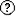
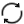

コンソールの理解
WebLogic Remote Consoleは、ドメインまたはモデル・テンプレートのどちらを実行しているかに関係なく、統合インタフェースからWebLogic Serverドメインを管理するためのポータルです。
WebLogic Remote Consoleを初めて起動すると、「起動タスク」ダイアログ・ボックスが開き、管理サーバーやWDTモデル・ファイルなどの新しいプロバイダに接続するためのオプションが表示されます。 WebLogic Remote Consoleは接続の詳細を記憶するため、後続の訪問時に最後のプロジェクトで開き、中断した場所から続行できます。
WebLogic Remote Consoleの構造は、プロバイダ・タイプ間で類似しており、プロバイダ・タイプに適切な差異があります。
インタフェースの主要要素
「プロバイダ」ドロワーを開き、保存したプロバイダ接続を表示および管理します。
「ナビゲーション・ツリー」を参照して、プロバイダの構造をノード・ツリーとして確認します。 管理サーバーやWDTモデル・ファイルなどのドメインに基づくプロバイダでは、ノード・ツリーはWebLogic Serverドメインを定義するMBean構造に基づいて構築されます。 ナビゲーション・ツリーの横にNavStripがあります。 複数のパースペクティブを持つプロバイダでは、NavStripのアイコンを使用してパースペクティブ間を移動することもできます。
NavStripの上にあるをクリックして、より大きな編集領域が必要なときにナビゲーション・ツリーを非表示にします。 もう一度クリックすると、ナビゲーション・ツリーに戻ります。
「コンテンツ・ペイン」は、ドメインまたはプロパティ・リストを管理するための主要な編集領域です。 ナビゲーション・ツリーのノードを移動すると、新しい位置と一致するようにコンテンツ・ペインが更新されます。
ツール
ツールは、インタフェースのナビゲートまたは操作に使用できる一連のクイック・アクションです。 これらのアクションのアイコンは、WebLogic Remote Consoleの上部に散在します。
ツール・アイコンは、該当するページにのみ表示されます。 たとえば、アクティブなドメインに対する保留中の変更を示すために使用されるショッピング・カートは、管理サーバー・プロバイダにのみ表示されます。
| ツール・アイコン | 説明 |
|---|---|
|
|
プロバイダのホーム・ページに移動します。 |
| ショッピング・カート | WebLogic Serverドメインにコミット可能な保留中の変更があるかどうかを示します。 「ショッピング・カート」がいっぱいになると、それをクリックして保留中の変更を表示し、コミットまたは破棄できます。 |
| 履歴の表示 | 訪問したページのレコードをトリガーします。 アクティブの場合、ドロップダウン・リストが表示され、前のページを表示したり、前のページに戻ることができます。 履歴は現在のパースペクティブに限られています。 「その他」をクリックし、「履歴エントリの消去」をクリックしてナビゲーション履歴を削除します。 |
| プロバイダ接続を管理できる「プロバイダ」ドロワーを開きます。 | |
| /前後の参照 | WebLogic Remote Consoleで以前にアクセスしたページを前後にブラウズします。 |
| ページ履歴 | 「ページ履歴」ダイアログ・ボックスを開きます。このダイアログ・ボックスには、WebLogic Remote Consoleで以前にアクセスしたページがリストされます。 |
|
|
現在のパースペクティブのランディング・ページに移動します。 |
|  ヘルプ | 現在のページに存在する属性に関する参照情報を表示します。 |
|  リロード | 現在のページのフォームまたは表を最新の使用可能なデータでリフレッシュします。 「自動リロード間隔」が有効な場合、このアイコンは継続的にバウンスします。 |
|
|
WebLogic Remote Consoleがページをリロードして情報をリフレッシュする間隔を秒単位で設定します。 別のタブを選択するか、別のページに移動すると、自動再読み込みは停止します。 自動リロードを停止するには、バウンスしている「リロード」アイコンをクリックするか、「自動リロード間隔」をクリックして、間隔を |
| ページ値のリフレッシュ | コンテンツ・ペインを最新の値で更新します。 |
ドメインの確認
WebLogic Serverドメインは複雑な構造になる可能性があるため、WebLogic Remote Consoleには目的を特定するための複数のメソッドが用意されています。
ナビゲーション・ツリー: ナビゲーション・ツリーのノードを展開してその子を参照し、WebLogic Serverドメインの階層関係を詳細に理解します。
ブレッドクラム: コンテンツ・ペインには、ノード・ブランチにさらに進むときに方向を付けるブレッドクラム・メニューが用意されています。 「ブレッドクラム」メニューでノードのページ・タイトルをクリックして、関連コンテンツに直接移動する関連ノードへのリンクを検索することもできます。
検索: 検索バーを使用して、問合せに一致するドメイン内のMBeansを検索します。 検索は、現在のプロバイダおよびパースペクティブ内に制限されます。 前の検索問合せは、ナビゲーション・ツリーの最後のノードとして、「最近の検索」ノードの下にネストされています。
ダッシュボード: ドメイン内の特定のデータを定期的に確認している場合は、ダッシュボードを使用して複雑な検索フィルタをキュレーションし、ドメインに関する様々な情報を比較できます。 詳細については、「ダッシュボード」を参照してください。
変更インジケータ
MBean属性を変更すると、WebLogic Remote Consoleによって属性のフィールドに黒いアウトラインが追加され、デフォルト値が設定されなくなったことが示されます。
MBean属性をデフォルト設定に戻すには、属性のフィールド内で右クリックし、「デフォルトに戻す」をクリックします。 変更を保存してコミットします。
ノート
ドメイン構成ファイルconfig.xmlは、MBean属性がデフォルト以外の値に設定されている場合のみ記述します。 「デフォルトに戻す」を使用すると、(不要になった)属性がファイルから削除されます。
コンソール・プリファレンスの変更
ニーズに合わせてデスクトップWebLogic Remote Consoleをカスタマイズできます。
-
「ファイル」、「プリファレンス」の順に移動します。 (macOSでは、WebLogic Remote Console、「アプリケーション・プリファレンス」の順に移動します)。
-
セクション・タブを選択し、必要に応じて変更します。
-
「プリファレンス」ダイアログ・ボックスを閉じて、変更を適用します。
表のカスタマイズ
表に表示する列を選択し、無関係なデータを非表示にして、重要な詳細にフォーカスできます。
-
カスタマイズする表を見つけます。 たとえば、「編集ツリー」で、「環境」、「サーバー」の順に移動します。
-
「表のカスタマイズ」をクリックして、使用可能な列のリストを表示します。
使用可能な列オプションは、すべての列(プロパティ)がすべての表に適用できるわけではないため、表によって異なります。
-
矢印を使用して、目的の列を「使用可能な列」から「選択した列」に移動します。 不要な列をすべて「使用可能な列」に戻します。 列を表に表示する順序で「選択した列」に移動します。 「選択した列」の下に少なくとも1つの列が必要です。
-
変更内容を保存するには「適用」をクリックします。
表列の変更は無期限に保持され、適用可能なすべてのプロバイダでその特定の表に適用されます。 wdt-model_1の「サーバー・テンプレート」の表列を変更すると、それらの変更はwdt-model_2およびadmin-server_1 (ツリーの編集)の「サーバー・テンプレート」表にも影響します。
表をデフォルトの列セットに戻すには、「表のカスタマイズ」を開き、「リセット」をクリックします。
プロジェクト
プロジェクトを使用して、ワークフローに適した方法でプロバイダを編成します。
任意の数のプロバイダをプロジェクトに追加できます。 同じプロバイダを複数のプロジェクトに追加することもできます。
わかりやすくするために、プロパティ・リストをWDTモデル・ファイルとともに使用する場合は、プロパティ・リスト・プロバイダをWDTモデル・ファイルと同じプロジェクトに保持することをお薦めします。
プロジェクトの作成
コレクションにプロバイダを配置するには:
-
「ファイル」、「新規プロジェクト」の順に開きます。
-
新規プロジェクトの名前を入力します。
-
「プロバイダ」ドロワーを開き、プロジェクトの名前の横にある「その他」をクリックします。 プロバイダを追加するには、次のいずれかのオプションを選択します:
- 管理サーバー接続プロバイダの追加
- WDTモデル・ファイル・プロバイダの追加
- WDTコンポジット・モデル・ファイル・プロバイダの追加
- プロパティ・リスト・プロバイダの追加
- 新規WDTモデル・ファイルのプロバイダの作成
- 新規プロパティ・リストのプロバイダの作成様々なプロバイダ・タイプの詳細は、「プロバイダ・タイプ」を参照してください
-
必要な情報を入力します。
-
OKをクリックして、プロジェクトにプロバイダを追加します。
-
プロジェクトにプロバイダを追加します。
プロバイダは、いつでもプロジェクトに追加または削除できます。 別のプロジェクトに切り替えるには、「ファイル」、「プロジェクトに切替え」の順に開き、切り替えるプロジェクトを選択します。
プロジェクトを削除しても、プロジェクト内のプロバイダには影響しません。
プロジェクトのエクスポート
WebLogic Remote Consoleを複数のコンピュータで使用する場合、プロジェクトのエクスポートは、複数のコンピュータ間でプロジェクトを共有する便利な方法です。
ノート
プロジェクトにWDTモデル・ファイルが含まれている場合は、このプロジェクトがインポートされるすべてのコンピュータからWDTモデル・ファイルのロケーションにアクセスできることを確認してください。-
「プロバイダ」ドロワーで、「その他」をクリックし、「プロバイダをプロジェクトとしてエクスポート」を選択します。
-
エクスポートしたプロジェクトの名前を入力します。 別のWebLogic Remote Consoleにインポートした場合、これはプロジェクトの名前になります。
-
エクスポートしたプロジェクトのファイルの名前を入力します。
-
OKをクリックし、エクスポートしたプロジェクト・ファイルを保存するファイルのロケーションを選択します。
WebLogic Remote Consoleは、WebLogic Remote Consoleの他のインスタンスにインポートできるプロジェクト詳細を含むJSONファイルを作成します。
プロジェクトのインポート
既存のプロジェクトのプロジェクト詳細をインポートして、WebLogic Remote Consoleの新しいインストールで生産性を迅速に向上させることができます。
-
プロジェクトをエクスポートし、ファイルをインポートするコンピュータに保存します。 「プロジェクトのエクスポート」を参照してください。
-
ファイルをインポートするコンピュータで、WebLogic Remote Consoleを起動します。
-
「プロバイダ」ドロワーで、「その他」をクリックし、「プロジェクトのインポート」を選択します。
-
「ファイルのアップロード」をクリックし、エクスポートされたプロジェクト・ファイルを参照します。
-
「インポート」をクリックします。
インポートされたプロジェクトは、自動的にWebLogic Remote Consoleにロードされた現在のプロジェクトになります。
macOSでのキーボード・ナビゲーションの有効化
macOSを実行しているデバイスでは、Tabキー(またはShiftキーを押しながらTabキー)を使用してWebLogic Remote Consoleのコントロール間を移動する前に、特にキーボード・ナビゲーションを有効にする必要があります。
-
macOSを実行しているデバイスで、Appleのメイン・メニューを開き、「システム設定」を選択します。
-
サイドバーの「キーボード」項目をクリックします。
-
「キーボード・ナビゲーション」オプションをオンにします。
-
ホストされたWebLogic Remote ConsoleでSafariブラウザを使用する場合は、次を実行します:
-
Safariブラウザを開き、メイン・メニューを開きます。
-
「設定」を選択します。
-
「拡張」タブで、「Tabを押してwebページ上の各項目を強調表示」オプションをオンにします。
-